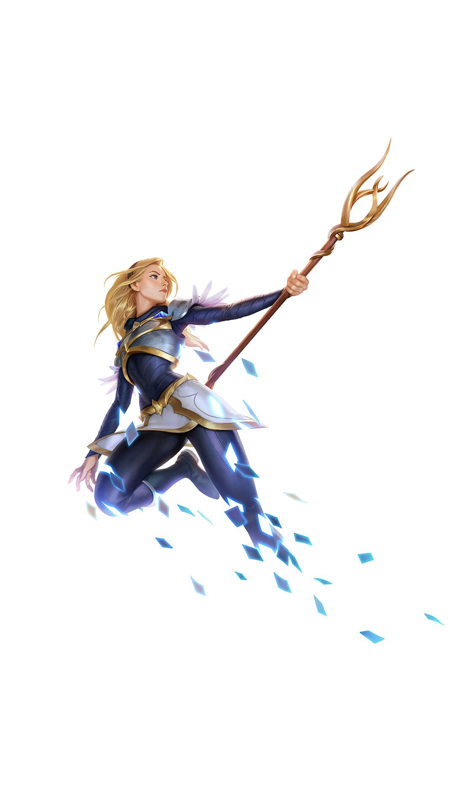
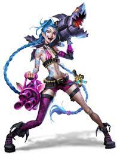
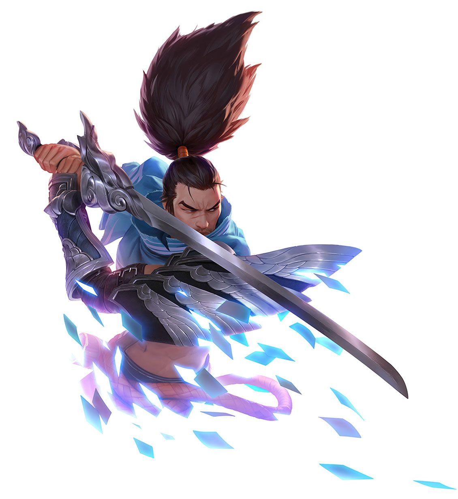

Luxanna Stemmaguarda nasceu em Demacia, um reino insular onde habilidades mágicas são vistas com medo e desconfiança. Capaz de dobrar a luz à sua vontade, ela cresceu temendo ser descoberta e exilada, e foi forçada a manter seus poderes em segredo a fim de preservar o status de nobreza de sua família.
Apesar de tudo, o otimismo e resiliência de Lux a levaram a aceitar seus talentos únicos e agora ela os utiliza em segredo a serviço de sua terra natal.

Uma criminosa impulsiva e maníaca de Zaun, Jinx vive para disseminar o caos sem se preocupar com as consequências.
Com um arsenal de armas mortais, ela detona as explosões mais altas e mais luminosas para deixar um rastro de destruição e pânico por onde passa. Jinx abomina o tédio e deixa alegremente sua marca caótica de pandemônio aonde quer que vá.

Yasuo, um ioniano extremamente determinado, é também um ágil espadachim que usa o próprio ar como arma para enfrentar seus inimigos.
Quando jovem, ele teve seu orgulho ferido ao ser acusado injustamente do assassinato de seu mestre — sem conseguir provar sua inocência, ele foi forçado a matar o próprio irmão para se defender.
Até hoje, mesmo depois do verdadeiro assassino do seu mestre ter sido revelado, Yasuo ainda não consegue se perdoar e vaga por sua terra natal com apenas o vento para guiar sua espada.